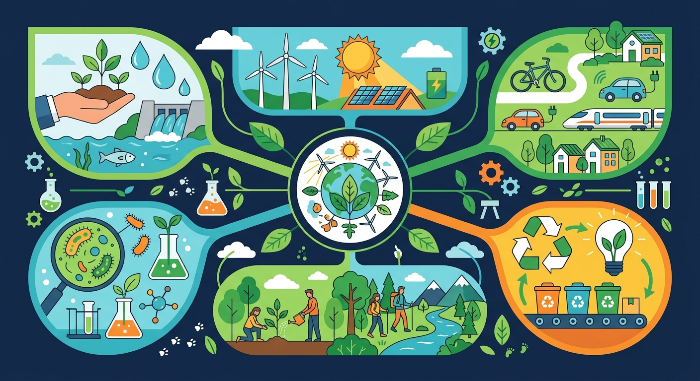

Gallery
v1.0.0 · skill v7.18

🎯 能说出3种常见可再生能源
🎯 能判断生活中材料的可回收性
🎯 能分析简单场景中的能量转换过程
❓ 为什么塑料袋比纸袋更不环保？
❓ 太阳能板阴天还能发电吗？
❓ 垃圾分类真的能保护地球吗？
学完这一课，这些问题你都能自信地回答。
以下哪种能源属于不可再生能源？
废电池应该投入什么颜色垃圾桶？
我们能不能既享受现代科技带来的便利，又不伤害地球？
地球上的资源是有限的，我们每天都在使用各种能源和材料来建造房屋、制造产品、点亮城市。现代生活离不开工程。
传统的工程方式消耗大量资源、产生污染，让河流变脏、空气变差、森林消失。我们的地球正在"生病"。
绿色工程用创新的方式设计可持续的解决方案——让我们既能享受现代生活，又能保护地球。这就是我们今天要探索的！
想象一下：你要建一座桥。传统方式可能砍很多树、用很多水泥，造完之后河边全是灰。但如果用绿色工程的方法，你会先想：有没有不用砍树的办法？能不能用回收的钢材？建完后河边的植物能不能恢复？
把下面的能源拖到正确的分类区域！
拖到这里 ↑
拖到这里 ↑
看看滑板运动员怎么在"能量滑板公园"里上上下下——位置越高，势能越大；滑下来时，势能变成动能！可再生能源也是这样，把自然界的能量转换成我们能用的电。
💡 拖动滑板运动员到高处，松手观察：势能（高度）怎么变成动能（速度）？
把下面的物品拖进正确的3R桶里！
点击下方的绿色元素，把它们加到建筑上，打造你的绿色建筑！
选择至少3个绿色元素，让你的建筑更环保！
学校要新建一座食堂，校长希望它是一座绿色建筑。作为绿色工程师，你会提出哪些建议？
第一题：食堂的电力应该用什么来源？
第二题：食堂的剩饭剩菜怎么处理？
第三题：食堂装修用什么材料最环保？
说出3种可再生能源，并解释为什么它们"用不完"。
画一张图：把你家改造成绿色建筑，标注每个绿色元素的作用。
调查你学校的一个环境问题，用3R原则提出一个改善方案。
可持续发展强调既满足当下需要，又不损害后代的资源与环境。绿色工程在设计阶段就考虑节能、减排、可回收和保护生态，例如节能建筑、清洁能源、减少一次性塑料。评价方案要同时看效果、成本和环境影响。
比较两个方案时分别问：能否解决问题？耗费多少资源？会不会造成污染或浪费？优先选择长期更友好的方案。
常见误区：常见误区是只看“看起来环保”的标签，而不检查是否真的节能或可回收。
可持续发展的核心含义更接近？
设计校园垃圾袋方案，更符合绿色理念的是？
AI 学伴会帮你诊断卡点，给你最小的提示，让你自己想明白。点击左下角的 💬 按钮开始对话。
先找到你哪里不懂，而不是直接告诉你答案
给刚刚够用的提示，让你自己想出答案
让你用自己的话再说一遍，确认你真的懂了
把风力发电机拆解成叶片/塔架/发电机三部分
太阳能电池板通过光电效应把阳光变成电
对比焚烧和填埋垃圾的优缺点
观察校园里的垃圾分类标识颜色
用3R原则设计减少快递包装的方案
关于雨水花园调蓄容积计算，正确的是
测试瓷砖、透水砖、草坪三种表面对200ml水的渗透时间
先独立作答，再点选项查看对错与错因。
雨水花园中设置卵石带的主要作用是
下列哪种材料最不适合做透水铺装基层
植被浅沟比传统排水沟的优势在于
雨水花园的蓄水层深度通常不超过____厘米
答案：30
过深影响植物生长
透水铺装的渗透系数应大于____mm/s
答案：0.5
国家标准最低要求值
✅ 最佳转速由设计决定，过快会损坏设备
💡 混淆速度与效率的关系
✅ 只有带回收标志的1-7类塑料可回收
💡 不了解塑料分类标准
口诀：减量再用回收忙，绿色地球共守护
类比：像整理书包一样分类垃圾：课本（可回收）、零食袋（其他）、电池（有害）
（升学题）下列哪项不是绿色建筑特征？
（迁移题）如果设计环保午餐方案，首先要考虑：
风力发电机叶片做成流线型主要为了：
点击节点跳转到对应章节；可切换布局。
查看本节课的前置知识、后续拓展和同域知识节点。点击节点可以跳转到相关课件。